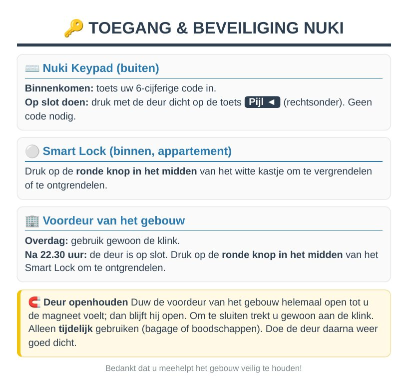
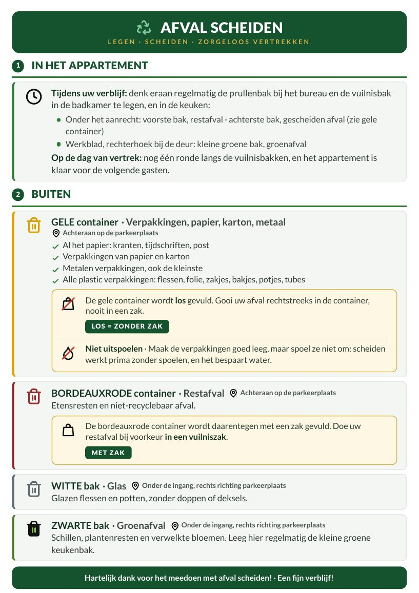

- 1Parkeer op de eigen parkeerplaats, direct naast het huis.
- 2Loop naar de voordeur van het appartement, op de begane grond.
- 3Voer uw persoonlijke code in op het slimme Nuki-slot en druk daarna op de bevestigingstoets. U ontvangt de code de dag vóór uw aankomst.
- 4De deur gaat van het slot. Welkom!

- 1Uw code wordt om 11:00 automatisch gedeactiveerd. Heeft u wat meer tijd nodig? Laat het me vooraf weten, dan pas ik het tijdstip graag aan.
- 2Heeft u de vaatwasser gebruikt? Zet hem dan aan met de laatste vaat: ik ruim hem zelf uit.
- 3Laat de lakens gewoon op de bedden liggen, u hoeft ze niet af te halen. Leg gebruikte handdoeken en theedoeken in de daarvoor bestemde mand.
- 4Scheid uw afval volgens de instructies in de keuken.
- 5Heeft u het hek gebruikt? Leg de afstandsbediening dan terug in het zwarte schaaltje op de wandtafel in de hal.
- 6Controleer of de ramen dicht zijn.
- 7Trek de deur gewoon achter u dicht: hij vergrendelt automatisch.
Supersnel internet in het hele appartement: thuiswerken, videobellen en streamen in 4K.
- Woonkamer: hoekbank, Smart TV, ronde tafel voor vier.
- Keuken: volledig ingericht, met toegang tot een zonnig balkon met tuinset.
- Slaapkamer 1: queensize bed 160 × 200, bureau.
- Slaapkamer 2: twee eenpersoonsbedden 90 × 200, kledingkast.
- Badkamer: inloopdouche, toilet, handdoekradiator, föhn.
- Hal: bankje en pantoffels voor het hele gezin.
Beweeg de muis over een apparaat met ⓘ om de handleiding te zien, of tik erop om die verderop te openen.
Slot: uw code wordt actief op het aankomsttijdstip en gedeactiveerd op het vertrektijdstip. Voer hem in en druk op de bevestigingstoets.
Elektrisch hek: de afstandsbediening ligt in het zwarte schaaltje op de wandtafel in de hal. Eén keer drukken om te openen, één keer om te sluiten.
Draai aan de linkerknop om de bereidingswijze te kiezen en daarna aan de temperatuurknop. Het middelste display toont de tijd en een timer: stel die in met de knoppen <, OK en >. Het rode lampje blijft branden tijdens het opwarmen en gaat uit zodra de temperatuur is bereikt.
Klik om alles te openen🍽️ Vaatwasser🍽️ VaatwasserVerwijder etensresten en vul de korven. Leg een tablet in het wasmiddelvakje. Kies het programma op het bedieningspaneel: 65°C voor erg vuile pannen, ECO 50°C voor dagelijks en zuinig gebruik, verre 50°C (glas) voor kwetsbare vaat. Druk op aan/uit en bevestig.
Til de hendel op om het capsulevak te openen, plaats een capsule en sluit het vak. Zet uw kopje neer en druk op espresso (kort) of lungo (lang). In de lade onder het apparaat liggen welkomstcapsules voor u klaar.
Klik om alles te openen🫧 Was-droogcombinatie🫧 Was-droogcombinatieWassen: open de deur en doe de was erin (maximaal driekwart van de trommel). Draai aan de middelste keuzeknop: COTON (katoen) of ECO 40-60 voor dagelijks gebruik, MIX voor gemengde stoffen, EXPRESS 15' voor een snelle wasbeurt. Druk op de startknop (▷Ⅱ).
Drogen: kies SÉCH. COTON (drogen katoen) om alleen te drogen, of LAV.+SÉCH. (wassen + drogen) om in één cyclus te wassen en te drogen. Het wasmiddelbakje zit linksboven.
Vul het waterreservoir (kan op elk moment). Druk op de aan-knop en wacht ongeveer 2 minuten tot het lampje continu brandt.
Op aanvraag vóór uw aankomst. Het apparaat staat op wieltjes: u kunt het van kamer naar kamer verplaatsen, bijvoorbeeld 's nachts naar een slaapkamer.
Raamset, onmisbaar: open het dichtstbijzijnde raam, leg de witte pvc-plank horizontaal op de vensterbank en laat het rolluik zakken tot het op de plank rust. De slang voert de warme lucht af via het rooster.
Inschakelen: knop ON/OFF op de witte Meliconi-afstandsbediening (of op het apparaat), oranje pijltjes TEMP ▲ ▼ voor de temperatuur, stand Froid (koelen, sneeuwvlokje ❄ op het display).
Centrale verwarming op gas in het hele appartement. Stel de temperatuur in met de thermostaat of de radiatorkranen: 19 tot 20 °C is comfortabel.
Zet de tv aan met de afstandsbediening. Netflix, YouTube en Prime Video zijn geïnstalleerd: log in met uw eigen account. Gebruik de knop Source om van bron te wisselen. De volledige handleiding vindt u via de QR-code op het boekje in het tv-meubel.
Tik op een apparaat om de handleiding te bekijken.
🫧 Was-droogcombinatieSamsung
Wassen: open de deur en doe de was erin (maximaal driekwart van de trommel). Draai aan de middelste keuzeknop: COTON (katoen) of ECO 40-60 voor dagelijks gebruik, MIX voor gemengde stoffen, EXPRESS 15' voor een snelle wasbeurt. Druk op de startknop (▷Ⅱ).
Drogen: kies SÉCH. COTON (drogen katoen) om alleen te drogen, of LAV.+SÉCH. (wassen + drogen) om in één cyclus te wassen en te drogen. Het wasmiddelbakje zit linksboven.
🍽️ VaatwasserThomson TDW4760
Verwijder etensresten en vul de korven. Leg een tablet in het wasmiddelvakje. Kies het programma op het bedieningspaneel: 65°C voor erg vuile pannen, ECO 50°C voor dagelijks en zuinig gebruik, verre 50°C (glas) voor kwetsbare vaat. Druk op aan/uit en bevestig.
🍳 OvenAmica ACV6005
Draai aan de linkerknop om de bereidingswijze te kiezen en daarna aan de temperatuurknop. Het middelste display toont de tijd en een timer: stel die in met de knoppen <, OK en >. Het rode lampje blijft branden tijdens het opwarmen en gaat uit zodra de temperatuur is bereikt.
☕ Nespresso-apparaatKrups
Til de hendel op om het capsulevak te openen, plaats een capsule en sluit het vak. Zet uw kopje neer en druk op espresso (kort) of lungo (lang). In de lade onder het apparaat liggen welkomstcapsules voor u klaar.
📺 Smart TVHisense
Zet de tv aan met de afstandsbediening. Netflix, YouTube en Prime Video zijn geïnstalleerd: log in met uw eigen account. Gebruik de knop Source om van bron te wisselen. De volledige handleiding vindt u via de QR-code op het boekje in het tv-meubel.
❄️ Mobiele aircoBeko
Op aanvraag vóór uw aankomst. Het apparaat staat op wieltjes: u kunt het van kamer naar kamer verplaatsen, bijvoorbeeld 's nachts naar een slaapkamer.
Raamset, onmisbaar: open het dichtstbijzijnde raam, leg de witte pvc-plank horizontaal op de vensterbank en laat het rolluik zakken tot het op de plank rust. De slang voert de warme lucht af via het rooster.
Inschakelen: knop ON/OFF op de witte Meliconi-afstandsbediening (of op het apparaat), oranje pijltjes TEMP ▲ ▼ voor de temperatuur, stand Froid (koelen, sneeuwvlokje ❄ op het display).
🔥 Keramische kookplaat
Raak aan/uit aan, kies de kookzone en stel het vermogen in met + en − (van 1 tot 9). Gebruik een pan met een vlakke bodem die bij de kookzone past. Zet na het koken terug op 0 en schakel uit.
🌡️ Verwarming
Centrale verwarming op gas in het hele appartement. Stel de temperatuur in met de thermostaat of de radiatorkranen: 19 tot 20 °C is comfortabel.
🔑 Nuki-slot en hek
Slot: uw code wordt actief op het aankomsttijdstip en gedeactiveerd op het vertrektijdstip. Voer hem in en druk op de bevestigingstoets.
Elektrisch hek: de afstandsbediening ligt in het zwarte schaaltje op de wandtafel in de hal. Eén keer drukken om te openen, één keer om te sluiten.
🧊 Koel-vriescombinatieProline
No-frost combinatie. De vriezer zit onderaan. Sluit de deuren goed, alstublieft.
🧹 SteelstofzuigerDreame R10 Pro
Snoerloos, staat in het laadstation. Aan/uit-knop op de handgreep. Leeg na gebruik het stofreservoir met de uitwerpknop en zet de stofzuiger terug in het laadstation.
👔 StoomstrijksysteemPhilips PerfectCare Pure
Vul het waterreservoir (kan op elk moment). Druk op de aan-knop en wacht ongeveer 2 minuten tot het lampje continu brandt.
- Roken en vapen is overal verboden, binnen en buiten: ook op het balkon en rond het huis. Gooi alstublieft geen peuken op de grond.
- Huisdieren niet toegestaan.
- Stilte tussen 22:00 en 7:00: er wonen buren direct naast het appartement.
- Feesten zijn niet toegestaan. De woning is alleen bestemd voor de personen die in de boeking vermeld staan.
- Sluit ramen en luiken als u weg bent en 's nachts.
- Is er een probleem (lekkage, storing)? Laat het me meteen weten.
- Doe lampen en apparaten uit die u niet gebruikt.
- Afval wordt gescheiden, met instructies in de keuken. Onder het aanrecht: de voorste bak is voor restafval, de achterste voor recyclebare verpakkingen en het kleine groene bakje voor etensresten.
- Biologische verzorgings- en schoonmaakproducten in kleine verpakkingen.
- Zet de verwarming of airco uit wanneer de ramen openstaan of wanneer u weg bent.
- Korte douches, een volle vaatwasser en wasmachine: kleine gebaren die het verschil maken.
- Het centrum ligt op 800 m lopen, Straatsburg is met een directe TER bereikbaar en het bos van Haguenau ontdekt u op de fiets.

Haguenau, de hoofdstad van de Noord-Elzas, heeft op 800 m een levendig historisch centrum. Straatsburg ligt op ongeveer 40 min met de auto, of 21 tot 30 min met de directe TER. Het appartement beslaat de begane grond van een gerenoveerd huis uit de jaren dertig, met buitengevelisolatie.
Het appartement ligt op de begane grond en alle ruimtes bevinden zich op hetzelfde niveau, met een inloopdouche. Vanaf buiten bereikt u het via een paar treden. De eigen parkeerplaats ligt direct naast het huis. De woning is niet geschikt voor rolstoelen. Heeft u vragen over de toegang? Neem dan contact met me op.

of via de berichtenfunctie van uw boekingsplatform.
Ik wens u een heerlijk verblijf in Haguenau en de Elzas!